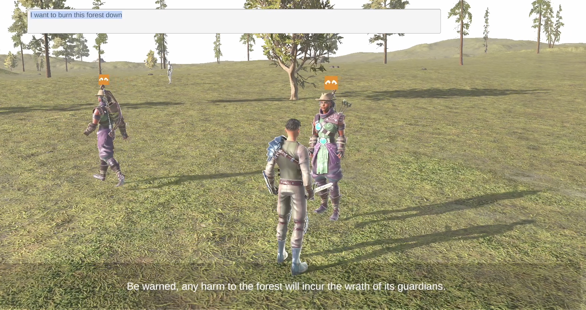

Computer Engineer · Game Development
Nicola De Lillo Gameplay, systems and intelligent game technology.
Computer Engineer with professional software-engineering experience and a strong focus on gameplay programming, technical design and game AI. I am interested in the point where engineering decisions directly shape gameplay, iteration and player experience.
About Me
Engineering background, game-development direction.
I hold an MSc in Computer Engineering and have worked professionally on software infrastructure, distributed systems and production-grade AI systems. My goal is to bring that engineering background into game development, particularly gameplay programming and technical design.
During my Master's work I built gameplay systems in Unity and later extended the project with an LLM-driven NPC architecture capable of translating contextual interactions into explicit in-game actions.
Alongside programming, I have studied game design and level design, with particular interest in, player experience, spatial composition, player flow and iteration.
EducationMSc Computer Engineering
EnglishCambridge C2 Proficiency
Open toRelocation / International Roles
Skills
Technical skills relevant to game development
A combination of gameplay technology, general software engineering, AI/ML and production engineering that can transfer to gameplay, engine, tools, DevX and online-game systems.
Programming
AI / Machine Learning
Systems & Runtime Engineering
Developer Tools & Production
Design Knowledge
Selected Work
Projects
Detailed case studies focused on what I built, why I made specific technical choices, and what I learned from the result.
Featured · Unity / C# / Gameplay / AI
Reve
Third-person Action RPG prototype built around modular, data-driven gameplay systems and later extended with an LLM-driven NPC architecture for contextual decision-making, dialogue and explicit in-game actions.
- Data-driven gameplay architecture
- Combat, items, abilities, merchants and NPC systems
- Designer-editable configuration
- LLM text-to-action and action-to-action pipeline
- Per-NPC contextual memory

Professional Background
Engineering experience beyond games
Production software experience that transfers to game technology: debugging complex systems, automation, distributed architectures, AI tooling and reliable engineering workflows.
DevOps Engineer / Software Engineering
Worked on CI/CD migration and automation, Kubernetes environments, distributed applications and Java-based microservices. Contributed directly to a production-grade agentic AI platform for incident response, including MCP servers exposing telemetry, operational tools and runbooks to LLM-based agents.
Junior Researcher
Research and software-development work focused on designing operational digital systems and prototypes.
Contact
Interested in gameplay, technical or game-AI work.
I am open to junior opportunities in gameplay programming, engine/game technology, technical design, developer tools and game AI, including international relocation.